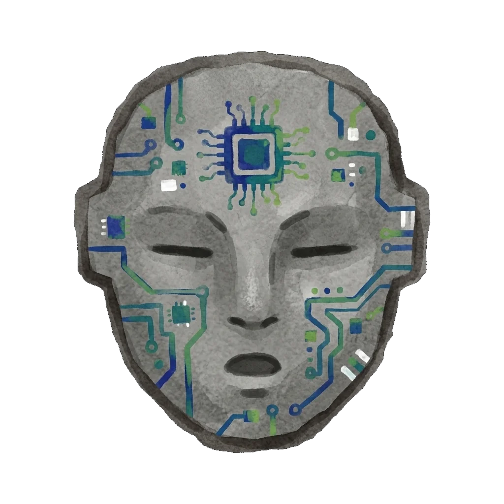

Despierta los espíritus del territorio
arrastra las máscaras a los dibujos rupestres

Nivel V · Espíritus Hermanos
El canto de los Espíritus
Nueve figuras rupestres habitan tres territorios sonoros: el Atlántico arriba,
el Pacífico a la izquierda y el Amazonas a la derecha. Cada máscara ancestral
convoca un timbre distinto —viento, percusión, sintetizador— y al despertar
un espíritu, su canto entra en sincronía con los demás.
Arrastra una máscara sobre cualquier figura para despertarla.
Todos los bucles comparten el mismo tempo: entran en fase automáticamente.
Toca una figura animada para retirar su máscara.
Usa el botón central para pausar y reanudar el conjunto.